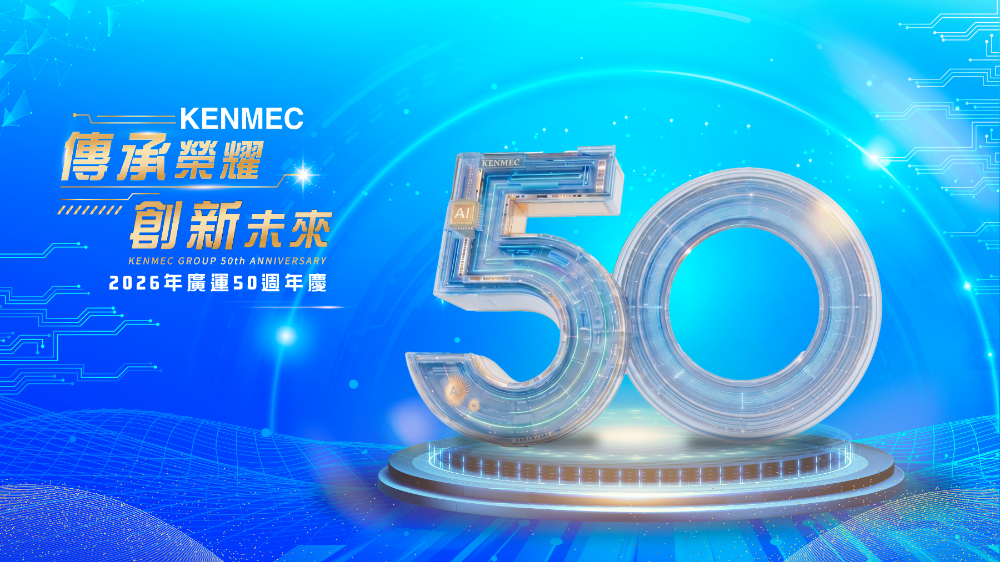

KENMEC 50 · TIME ADVENTURE

廣運時光探險｜活動說明
從1976年創業起點出發，進入2026年AI液冷技術，回顧廣運五十年發展歷史，認識智慧工廠核心技術，展望下一個五十年與百年企業願景。
- 第 01 關｜啟航輸送機 · 303運動休息室
一切故事，就從這裡開始。 - 第 02 關｜液冷尋密碼 · 319運動休息室
解開AI時代的關鍵技術。 - 第 03 關｜廣運歷史小測驗 · 廣運歷史牆
回顧五十年，一起見證廣運成長。 - 第 04 關｜廣運AI智慧一點通 · 後門
認識智慧工廠的核心技術。 - 第 05 關｜廣運成功密碼 · 329運動休息室
展望下一個五十年
請前往各關卡現場掃描該關專屬 QR Code開始挑戰。完成手機挑戰後，向本關關主說出通關密語並在闖關護照蓋章。
完成五個關卡並集滿護照印章後，請向各個關主出示護照確認通關，即可領取禮券。禮券領取後，關主將於護照兌換區打孔，請妥善保管護照。
本頁不提供五關入口；手機完成紀錄僅供個人查看，兌獎以闖關護照蓋章為準。實境解謎闖關禮每人兌換限 1 次，護照遺失恕不補發。